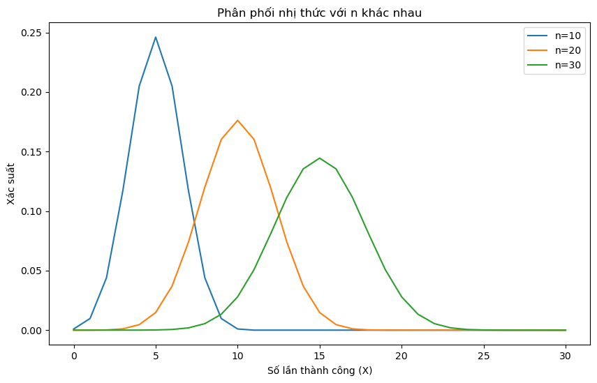

So sánh Likelihood Ratio, Jeffreys và Clopper-Pearson trong ước lượng khoảng tin cậy cho phân phối binomial
Author
Nguyễn Ngọc Bình
Phân phối nhị thức (binomial distribution)
Phân phối nhị thức (binomial distribution) là một dạng phân phối xác suất rời rạc, đặc trưng cho số lần thành công trong một số lần thử nghiệm độc lập và có xác suất thành công cố định trong mỗi lần thử nghiệm. Phân phối nhị thức thường được sử dụng trong các tình huống mà mỗi thử nghiệm chỉ có hai kết quả có thể xảy ra (thành công hoặc thất bại), và xác suất thành công là không đổi trong tất cả các lần thử nghiệm.
Hàm xác suất của phân phối nhị thức được mô tả bởi công thức:
Ở đây: - \(X\) là biến ngẫu nhiên biểu thị số lần thành công trong \(n\) lần thử nghiệm. - \(k\) là một giá trị cụ thể của \(X\) (số lần thành công). - \(n\) là số lần thử nghiệm độc lập. - \(p\) là xác suất thành công trong mỗi lần thử nghiệm. - \(\binom{n}{k}\) là số cách chọn \(k\) thành công từ \(n\) lần thử nghiệm, được gọi là hệ số nhị thức.
Phân phối nhị thức thường được ký hiệu là \(B(n, p)\), trong đó \(n\) là số lần thử nghiệm và \(p\) là xác suất thành công. Phân phối này có giá trị kỳ vọng \(np\) và phương sai \(np(1-p)\).
Phân phối nhị thức được ứng dụng rộng rãi trong thống kê, xã hội học, kinh tế học, và nhiều lĩnh vực khác để mô tả sự biến động trong số lần thành công trong một số thử nghiệm độc lập.
import matplotlib.pyplot as pltimport numpy as npfrom scipy.stats import binom# Các tham số của phân phối nhị thứcn_values = [10, 20, 30] # Số lần thử nghiệmp =0.5# Xác suất thành công# Tạo mảng giá trị X từ 0 đến n_max cho mỗi nn_max =max(n_values)x_values = np.arange(0, n_max +1)# Vẽ hình minh họa phân phối nhị thức cho các giá trị n khác nhauplt.figure(figsize=(10, 6))for n in n_values: pmf = binom.pmf(x_values, n, p) plt.plot(x_values, pmf, label=f'n={n}')plt.title('Phân phối nhị thức với n khác nhau')plt.xlabel('Số lần thành công (X)')plt.ylabel('Xác suất')plt.legend()plt.show()

Khoảng tin cậy
Khoảng tin cậy của ước lượng cho phân phối nhị thức (binomial) thường được xây dựng bằng cách sử dụng các phương pháp như Clopper-Pearson, Jeffreys, hay các phương pháp xấp xỉ khác tùy thuộc vào kích thước mẫu.
Clopper-Pearson Confidence Interval:
Clopper-Pearson là một trong những phương pháp phổ biến để xây dựng khoảng tin cậy cho tỷ lệ thành công \(p\) trong phân phối nhị thức. Khoảng tin cậy Clopper-Pearson cho tỷ lệ thành công là xác định bởi công thức:
Trong đó: - \(X\) là số lần thành công trong \(n\) lần thử nghiệm. - \(z_{\alpha/2}\) là giá trị critial của phân phối chuẩn tại mức ý nghĩa \(\alpha/2\).
Ví dụ:
Giả sử bạn thực hiện một thử nghiệm với một đồng xu công bằng (\(p = 0.5\)) và tung nó 100 lần (\(n = 100\)). Sau đó, bạn quan sát \(X = 60\) lần mặt ngửa.
Sử dụng Clopper-Pearson, khoảng tin cậy 95% cho tỷ lệ thành công \(p\) sẽ là:
Ở đây, \(z_{0.025}\) là giá trị critial của phân phối chuẩn tại mức ý nghĩa 0.025. Bạn có thể tính được giá trị cụ thể của khoảng tin cậy này và sử dụng để ước lượng tỷ lệ thành công \(p\) với độ tin cậy 95%.
Các phương pháp ước lượng khoảng tin cậy cho phân phối binomial Clopper-Pearson, Jeffreys, và Likelihood Ratio
Clopper-Pearson Method:
Công thức tính khoảng tin cậy Clopper-Pearson cho tỉ lệ thành công (\(p\)) trong một phân phối nhị thức có thể được biểu diễn như sau:
Trong đó: - \(X\) là số lần thành công trong \(n\) lần thử nghiệm. - \(z_{\alpha/2}\) là giá trị critial của phân phối chuẩn tại mức ý nghĩa \(\alpha/2\).
Jeffreys Method:
Khoảng tin cậy Jeffreys dựa trên phân phối Beta và có thể được biểu diễn như sau:
\[ P\left(\text{Beta}\left(x + \frac{1}{2}, n - x + \frac{1}{2}\right) \leq p \leq \text{Beta}\left(x + \frac{1}{2}, n - x + \frac{1}{2}\right)\right) = 1 - \alpha \]
Ở đây: - \(x\) là số lần thành công, - \(n\) là tổng số lần thử nghiệm, - \(\text{Beta}(a, b)\) đại diện cho phân phối Beta với các tham số hình dạng \(a\) và \(b\), - \(\alpha\) là mức ý nghĩa (ví dụ, 0.05 cho khoảng tin cậy 95%).
Likelihood Ratio Method:
Khoảng tin cậy Likelihood Ratio có thể được xác định bằng cách sử dụng ước lượng điểm và sai số tiêu chuẩn:
Ở đây: - Point Estimate là ước lượng điểm cho tỉ lệ thành công. - \(Z_{\alpha/2}\) là z-score tương ứng với độ tin cậy \((1 - \alpha)\). - Standard Error là độ lệch chuẩn của ước lượng.
So sánh ưu nhược điểm của Clopper-Pearson, Jeffreys, và Likelihood Ratio Method:
Clopper-Pearson Method:
Ưu điểm:
Bảo đảm độ tin cậy: Clopper-Pearson Method đảm bảo rằng khoảng tin cậy xây dựng sẽ bao gồm tỷ lệ thành công thực sự với độ tin cậy đã chọn.
Dễ hiểu và tính toán: Phương pháp này dễ hiểu và tính toán, thích hợp cho các ứng dụng với mẫu nhỏ.
Nhược điểm:
Rộng hóa khoảng tin cậy: Cho mẫu nhỏ, khoảng tin cậy Clopper-Pearson có thể rộng hơn so với các phương pháp khác, đặc biệt là khi tỷ lệ thành công gần 0 hoặc 1.
Jeffreys Method:
Ưu điểm:
Phù hợp với mẫu lớn: Thích hợp cho các mẫu lớn, có thể tạo ra khoảng tin cậy ngắn hơn so với Clopper-Pearson.
Nhược điểm:
Tính phức tạp: Yêu cầu tính toán phức tạp hơn so với Clopper-Pearson, đặc biệt là khi sử dụng các phương pháp số để tính toán các giá trị của phân phối Beta.
Likelihood Ratio Method:
Ưu điểm:
Phù hợp với mẫu lớn: Tích hợp tốt với các mẫu lớn, có thể tạo ra khoảng tin cậy ngắn hơn.
Tính chất lý thuyết tỷ số kiểm định: Phương pháp này có liên quan chặt chẽ đến lý thuyết tỷ số kiểm định cơ bản, có ứng dụng rộng trong thống kê.
Nhược điểm:
Không đảm bảo chính xác độ tin cậy: Không đảm bảo chính xác độ tin cậy với mức ý nghĩa đã chọn, đặc biệt là với mẫu nhỏ.
Yêu cầu giả định: Đòi hỏi giả định về phân phối của ước lượng trong các trường hợp cụ thể.
import numpy as npfrom scipy.stats import betaimport matplotlib.pyplot as pltdef calculate_confidence_intervals(X, n, alpha=0.05, method='clopper-pearson'):if method =='clopper-pearson': lower = beta.ppf(alpha/2, X, n - X +1) upper = beta.ppf(1- alpha/2, X +1, n - X)elif method =='jeffreys': lower = beta.ppf(alpha/2, X +0.5, n - X +0.5) upper = beta.ppf(1- alpha/2, X +0.5, n - X +0.5)elif method =='likelihood-ratio': p_hat = X/n se_lr = np.sqrt(p_hat * (1- p_hat) / n) z_lr =1.96# Giá trị z tương ứng với mức ý nghĩa 0.025 lower = p_hat - z_lr * se_lr upper = p_hat + z_lr * se_lrelse:raiseValueError("Invalid method. Choose 'clopper-pearson', 'jeffreys', or 'likelihood-ratio'.")return lower, upper# Dữ liệu mẫuX =5n =20# Tính khoảng tin cậy Clopper-Pearsonlower_cp, upper_cp = calculate_confidence_intervals(X, n, method='clopper-pearson')# Tính khoảng tin cậy Jeffreyslower_j, upper_j = calculate_confidence_intervals(X, n, method='jeffreys')# Tính khoảng tin cậy Likelihood Ratiolower_lr, upper_lr = calculate_confidence_intervals(X, n, method='likelihood-ratio')# Hiển thị kết quảprint(f"Clopper-Pearson CI: [{lower_cp}, {upper_cp}]")print(f"Jeffreys CI: [{lower_j}, {upper_j}]")print(f"Likelihood Ratio CI: [{lower_lr}, {upper_lr}]")# Dữ liệu mẫu lớn hơnX_large =500n_large =10000# Tính khoảng tin cậy Clopper-Pearsonlower_cp_large, upper_cp_large = calculate_confidence_intervals(X_large, n_large, method='clopper-pearson')# Tính khoảng tin cậy Jeffreyslower_j_large, upper_j_large = calculate_confidence_intervals(X_large, n_large, method='jeffreys')# Tính khoảng tin cậy Likelihood Ratiolower_lr_large, upper_lr_large = calculate_confidence_intervals(X_large, n_large, method='likelihood-ratio')# Hiển thị kết quảprint(f"Clopper-Pearson CI (Large Sample): [{lower_cp_large}, {upper_cp_large}]")print(f"Jeffreys CI (Large Sample): [{lower_j_large}, {upper_j_large}]")print(f"Likelihood Ratio CI (Large Sample): [{lower_lr_large}, {upper_lr_large}]")
Clopper-Pearson CI: [0.08657146910143461, 0.49104587170795744]
Jeffreys CI: [0.1023984856830451, 0.46419462924086813]
Likelihood Ratio CI: [0.06022381603583657, 0.4397761839641634]
Clopper-Pearson CI (Large Sample): [0.0458099421987706, 0.05445452702835886]
Jeffreys CI (Large Sample): [0.04585790480962443, 0.054402519732842006]
Likelihood Ratio CI (Large Sample): [0.045728279035330145, 0.05427172096466986]
Trong trường hợp mẫu lớn thì kết quả ước lượng gần bằng nhau, nhưng trong trường hợp mẫu nhỏ thì phương pháp Clopper-Pearson thận trọng hơn